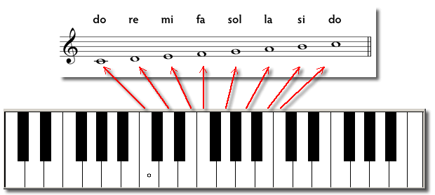
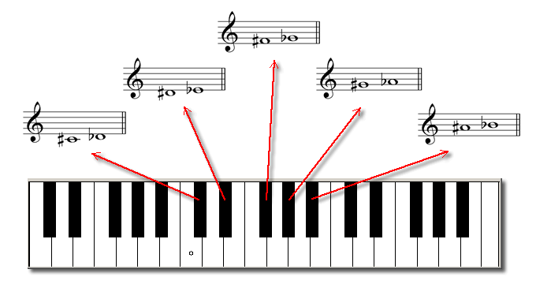

©hoose LANGUAGE
Таблица базовой письменности языков и диалектов ₽О©CИЯ код шрифтом ჼ₽ÅйЛЯ в
[₽yблёвой ℞ussi, не миксить u He ПRyтать с другой Экономиче$©k¥ go£oßo¥ Ө₽€£ ßÅ₽gЛАНА]
₽_RußI & МузыкографиЯ на базе БрайлЯ.
Все ноты, которые мы видели до сих пор, соответствуют белым клавишам фортепиано. Здесь мы увидим, как мы можем писать ноты, соответствующие черным клавишам фортепиано [₽∞8iAно].
Давайте сначала посмотрим на соответствие между белыми клавишами и их положением на нÅтоd'b@Rd [₽enтæ₾gram©¥AмÅнÄTიჼdb]:
Как мы пишем черные клавиши?
Возьмем пример. Черная клавиша между до и ре может быть написана с использованием примечания до , которому предшествует диез устойчивый, или путем предварения примечания ре бемолью плоский. Остальные ключи можно записать аналогично:
наведите курсор над ₽u©унком и в виртуальной лупе см.
наведите курсор над ₽u©унком и в виртуальной лупе см.
наведите курсор над ₽u©унком и в виртуальной лупе см.